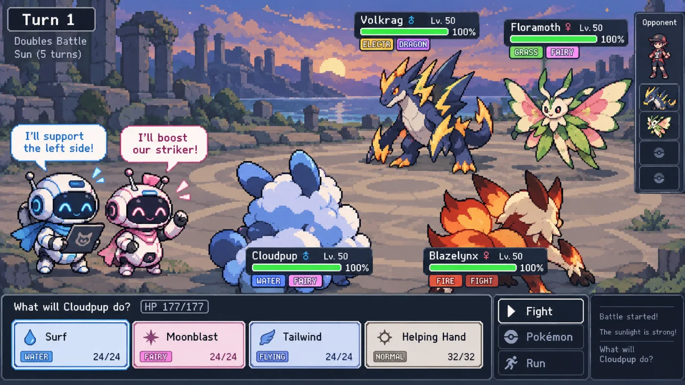

Multi-agent LLM coordination in a Pokémon 2v2 environment
October 10, 2026
https://github.com/OliverGrabner/multi-agent-poke-showdown

The future is in LLM collaborations, and it is important to be able to understand how good agents are at working together, communicating and negotiating actions. Most multi-agent research is about workflows, where agents pass tasks down a pipeline (Hong et al., 2024; Qian et al., 2024). To test this, I built a multi-agent environment on Pokémon Showdown's 2v2 format to evaluate these abilities.
"Both opps are Water types … so my Fire moves are resisted on both. … I plan to Wisp Dondozo … can you open with Fake Out to flinch one of them this turn?"
"Good call on Wisp-ing Dondozo. Quick correction though - Fighting isn't actually resisted by Water or Ground, so my Close Combat is neutral (1x) on both. … Locking in Fake Out → Whiscash."
Why Pokémon?
Pokémon doubles is a game-theory environment without full information. The opponents' sets are hidden and damage is random, so winning takes real strategy: reading the other team, splitting targets and planning around your partner. Recent work like the PokéAgent Challenge (Karten et al., 2026) benchmarks Pokémon battling, but each side is played by a single agent, and specialist RL agents still outplay general LLMs there. It doesn't test teammates who have to coordinate.
The goal is a controlled environment where I can measure how LLM agents coordinate, and that can later be used to train them with RL to encourage these collaborative behaviors.
Methodology
Environment
The official Pokémon Showdown simulator, wrapped as a Gym-style environment. Four players each control one Pokémon from a team of three, two per side.
Agents
Each turn, an agent reads a plain-English summary of the battle and a numbered list of its legal
moves. It can say a private message to its partner or choose a move, and
once it chooses, its partner is told what it picked.
Talk modes
Free talk (keep talking until both have chosen), one message each, no talk, and one model controlling both Pokémon.
Evaluation
Qwen3.8-27B plays both teammates against a scripted max-damage bot. Battles are seeded and every team draw is played from both sides, so each talk mode faces exactly the same battles.
Results
| Condition | 30%50%70% | Tokens per battle | |
|---|---|---|---|
| Free talk | 64% | 978k | |
| One model controls both | 54% | 450k | |
| One message each | 52% | 654k | |
| No talk | 42% | 259k |
Talking helps. Teammates who could talk freely won 64% of their battles against the scripted bot, while teammates who couldn't talk at all won 42%. Even a single message each (52%) beat no talk. One model controlling both Pokémon (54%) did better than no talk but worse than two agents talking freely, so I think the gain comes from the conversation itself, not just from one mind planning both moves.
Talking also costs. Free talk used 978k prompt tokens per battle, 3.8x the 259k of no talk, since every message means another model call that re-reads the battle and the conversation so far.
| Opponent | Win rate | |
|---|---|---|
| Qwen3.5-2B team | 96% | |
| Qwen3.5-9B team | 74% | |
| Scripted bot | 64% |
I also checked that the environment can tell models apart. A Qwen3.8-27B team won 96% of its battles against a team of 2B models and 74% against a team of 9B models, compared with 64% against the scripted bot. The stronger the opponent, the closer the games, which is what makes the environment usable as a benchmark for comparing models.
Next
I'm separating the effect of talking from the effect of seeing your partner's move. I'm also looking into turning the environment into a benchmark with a leaderboard across models, and using it for RL training to encourage collaborative behaviors.
Thanks
Through this project I wanted to learn more about agent collaboration and RL environments, and thought I'd share the results! I ran these experiments on Texas A&M's Grace cluster. Thank you to Maria Teleki and to my advisor, Prof. James Caverlee, for the guidance and feedback along the way.